Установка софтфона "MicroSIP"
Официальный сайт разработчика софтфона "MicroSIP"
- Скачиваем софтфон "MicroSIP" с официального сайта
- Запустите фаил установки программы "MicroSIP" 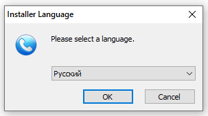
- Выберете русский язык и нажмите "OK" 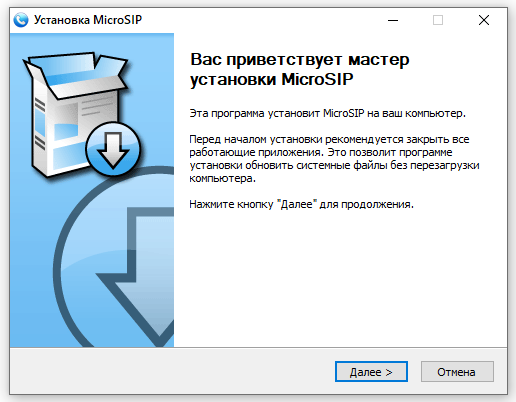
- Нажмите "Далее" 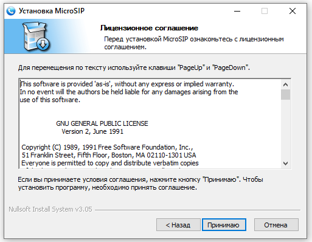
- Принимаем условия лицензионного соглашения нажав "Принимаю" 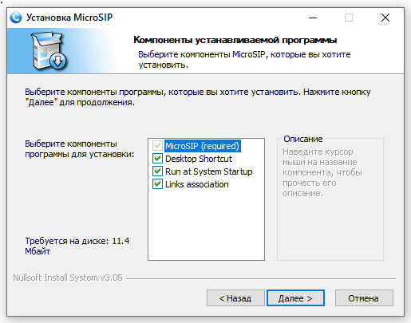
- При выборе компонентов при установке оставляем все по умолчанию и нажимаем "Далее" 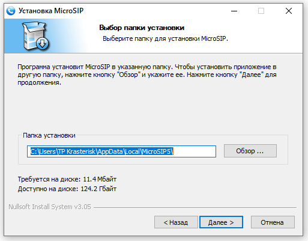
- Путь куда будет установлена программа "MicroSIP" рекомендуем оставить по умолчанию и нажать "Далее" 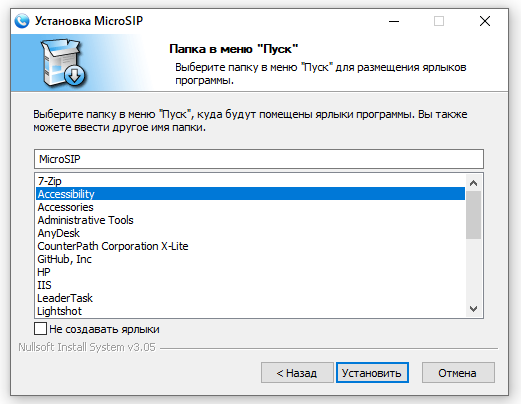
- Выбор папки в меню "Пуск" оставляем по умолчанию и нажимаем "Далее" 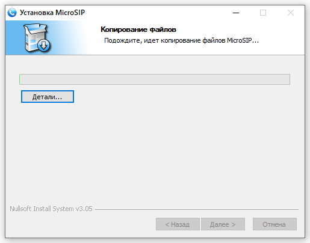
- Ожидаем установку программы "MicroSIp" 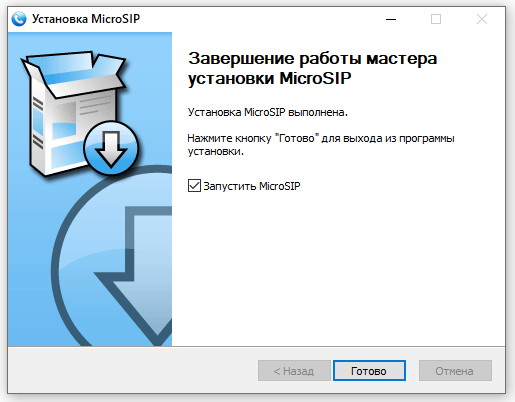
- После завершения установки нажимаем "Готово"и запускаем программу "MicroSIP"
Настройка аккаунта "MicroSIP"
После установки откройте программу "MicroSIP"
-
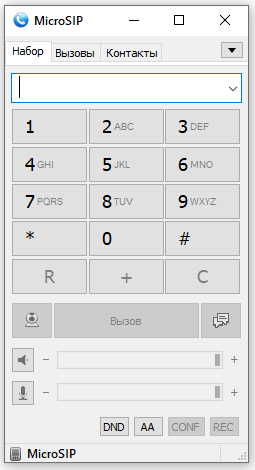
- Нажмите на иконку 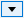 в правом верхнем углу 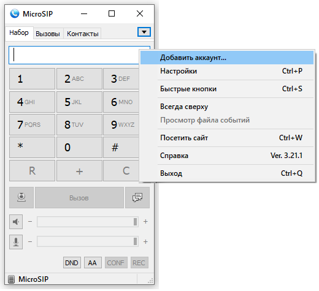
- После открытия меню нажмите пункт "Добавить аккаунт..." 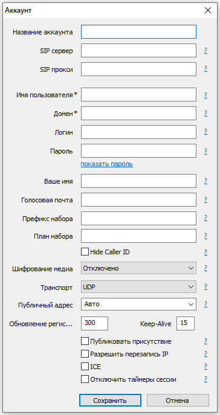
-
Описание основных пунктов настроек аккаунта
- "Название аккаунта" - Указываем название аккаунта "110" (их может быть несколько в "MicroSIP")
- "SIP сервер*" - Адрес вашей АТС, в примере – "pbx.krasterisk.ru"
- "SIP прокси" - В данном примере эта настройка не используется, часто может потребоваться при некорректной настройке АТС
- "Имя пользователя*" - Пользователь на АТС, как правило, короткий номер который вы регистрируете "110"
- "Домен*" - Снова адрес вашей АТС "pbx.krasterisk.ru"
- "Логин" Номер вашего короткого номера "110"
- "Пароль*" Пароль от вашего короткого номера"
- "Ваше имя" Имя, отображаемое в софтфоне (в карточке при звонке)
Поля отмеченные * обязательны к заполнению, на скриншоте ниже виден пример настройки:
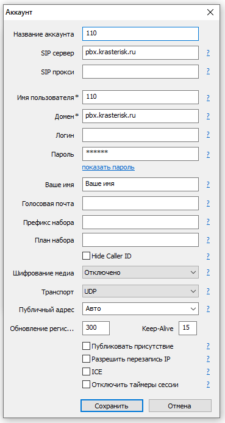
- После заполнения всех полей необходимо нажать на кнопку "Сохранить", и, если все было настроено корректно, серый значок телефона должен смениться на зелёный и у вас появиться возможность совершать и принимать звонки. 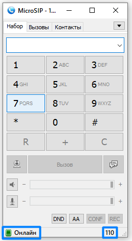
- Ваш "MicroSIP" готов к работе
Неверный пароль в "MicroSIP"
-
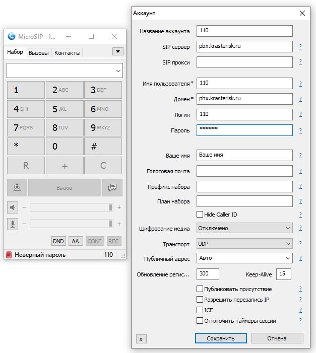
- Проверьте правильность пароля (нет, серьезно)
- Если, после проверки правильности пароля ошибка осталось, обратитесь в тех.поддержку support@krasterisk.ru
При обращение в тех. поддержку не забудьте написать
организацию от которой вы обращаетесь или номер лицевого
счета и короткий номер (экстеншен) который хотите
зарегистрировать
Далее - подробно опишите ситуацию при каких
обстоятельствах появилась данная ошибка
Сервер не найден в "MicroSIP"
-
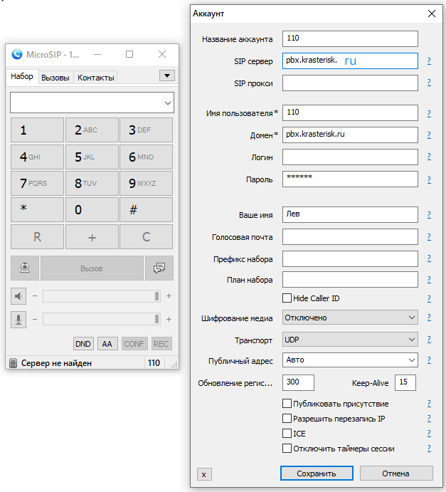
- Проверьте правильность (ip/domaine) адреса сервера в пункте "SIP сервер" (и опять я серьезно)
- В нашем примере на скриншоте выше, абонент не полностью указал (domaine) адрес сервера забыв указать "ru"
- Если, после проверки правильности (ip/domaine) адреса сервера ошибка осталось, обратитесь в тех.поддержку support@krasterisk.ru
При обращение в тех. поддержку не забудьте написать
организацию от которой вы обращаетесь или номер лицевого
счета и короткий номер (экстеншен) который хотите
зарегистрировать
Далее - подробно опишите ситуацию при каких
обстоятельствах появилась данная ошибка
Ошибка "Не найден" в "MicroSIP"
-
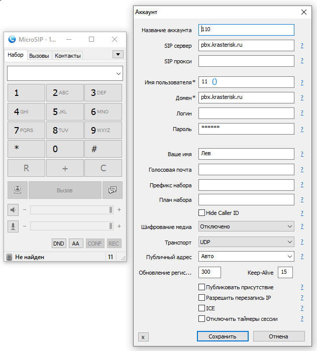
- Проверьте правильность короткого номера в пункте "Имя пользователя" (и опять я серьезно)
- В нашем примере на скриншоте выше, абонент не полностью указал короткий номер забыв указать "0"
- Если, после проверки правильности короткого номера ошибка осталось, обратитесь в тех.поддержку support@krasterisk.ru
При обращение в тех. поддержку не забудьте написать
организацию от которой вы обращаетесь или номер лицевого
счета и короткий номер (экстеншен) который хотите
зарегистрировать
Далее - подробно опишите ситуацию при каких
обстоятельствах появилась данная ошибка
Таймаут в "MicroSIP"
- Проверьте правильность (ip/domaine) адреса сервера в пункте "SIP сервер" (и опять я серьезно)
- В нашем примере на скриншоте выше, абонент не полностью указал (domaine) адрес сервера забыв указать "ru"
- Если, после проверки правильности (ip/domaine) адреса сервера ошибка осталось, обратитесь в тех.поддержку support@krasterisk.ru

При обращение в тех. поддержку не забудьте написать
организацию от которой обращаетесь или номер лицевого
счета и короткий номер (экстеншен) который хотите
зарегистрировать
Далее - подробно опишите ситуацию при каких
обстоятельствах появилась данная ошибка
Установка софтфона "3CX Phone"
Официальный сайт разработчика софтфона "3CX Phone"
- Скачиваем софтфон "3CX Phone" с официального сайта
- Запустите скаченный фаил установки программы "3CX Phone" 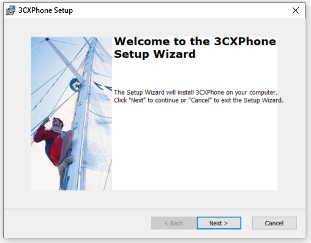
- Мастер установки приветствует и просит нажать "Next" 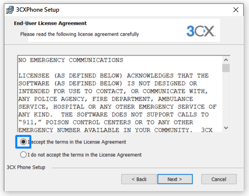
- Примите лицензионное соглашение переставив "метку" на "I accept..." и нажмите "Next"
- Путь куда будет установлена программа "3CX Phone" рекомендуем оставить по умолчанию и нажать "Next"
- Далее нажимаем "Install" 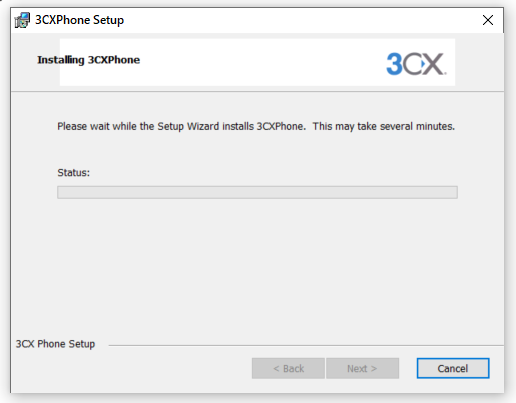
- Ожидаем установку программы "3CX Phone" 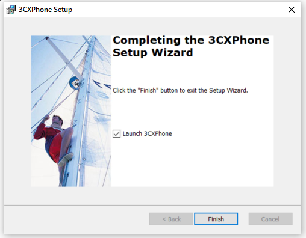
- После завершения установки нажимаем "Finish" и запускаем программу "3CX Phone"


Настройка аккаунта "3CX Phone"
После установки откройте программу "3CX Phone"
-
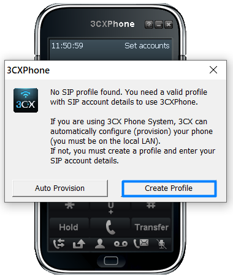
- После запуска в появившемся окне необходимо кликну "Создать Профиль" (Create Profile) 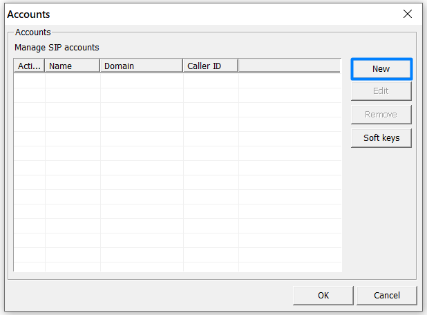
- После открытия меню нажмите пункт "New" 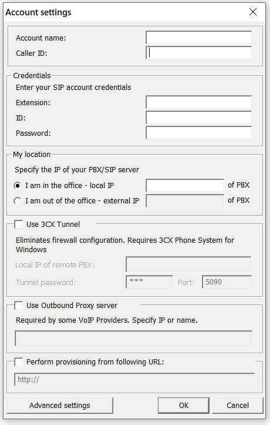
-
Описание основных пунктов настроек аккаунта
- "Account name" - Указываем название аккаунта "110" (их может быть несколько в "3CX Phone")
- "Caller ID" - Имя, отображаемое в софтфоне (в карточке при звонке)
- "Extension*" - Пользователь на АТС, как правило, короткий номер который вы регистрируете "110"
- "ID" - Номер вашего короткого номера "110"
- "Password*" - Пароль от вашего короткого номера"
- "I am in the office - local IP" – локальный IP-адрес АТС (для тех, кто работает в офисе)
- "I am out of the office – external IP" – публичный IP-адрес АТС (для тех, кто работает удаленно)
- Пишем IP-адрес АТС, в примере – "pbx.krasterisk.ru"
Поля отмеченные * обязательны к заполнению, на скриншоте ниже виден пример настройки:
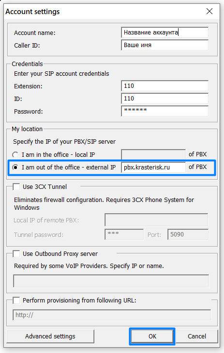
- После заполнения всех полей необходимо нажать на кнопку "OK", и, если все было настроено корректно, то статус учетной записи изменился на «On hook». 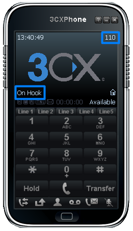
- Ваш "3CX Phone" готов к работе
Not connected в "3CX Phone"
У вас отображается "Not connected" (Нет соединения) с сервером АТC?
-
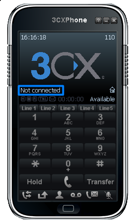
- Если статус аккаунта "Not connected" - проверьте интернет-подключение? за тем проверьте настройки профиля, как описано ниже 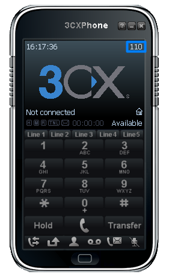
- Нажимаем на "Имя аккаунта" в нашем примере - это "110" 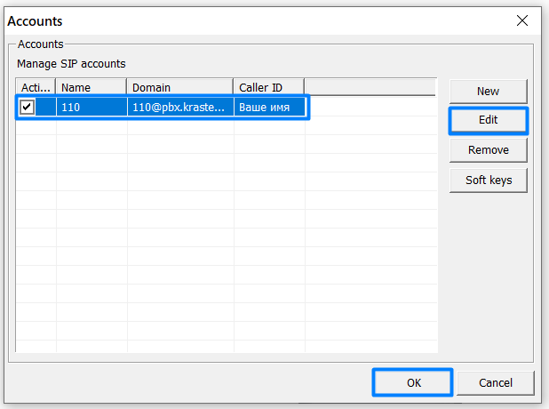
- Выбираем имя аккаунта который хотим проверить параметры соединения и нажимаем "Edit" 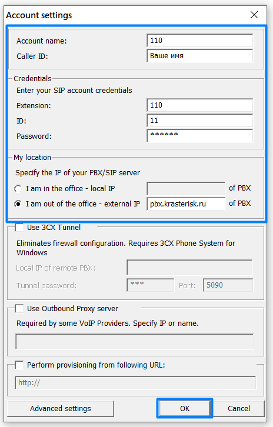
- Проверьте настройки профиля, в примере абонент забыл в поле "ID" поставить 0 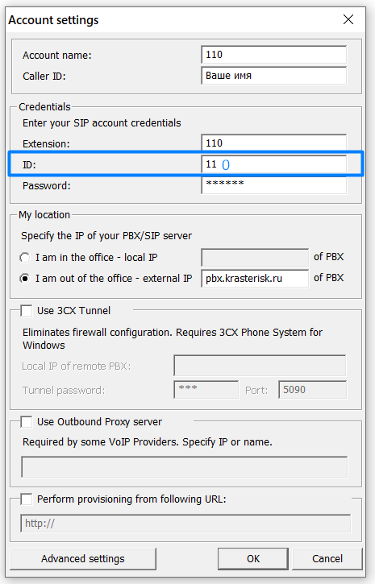
- Если, после проверки правильности пароля ошибка осталось, обратитесь в тех.поддержку support@krasterisk.ru
При обращение в тех. поддержку не забудьте написать
организацию от которой вы обращаетесь или номер лицевого
счета и короткий номер (экстеншен) который хотите
зарегистрировать
Далее - подробно опишите ситуацию при каких
обстоятельствах появилась данная ошибка
Первый заголовок
Второй заголовок
Третий заголовок
Четвертый заголовок
Пятый заголовок
Подключение IP-Телефона Grandstream GXP16XX
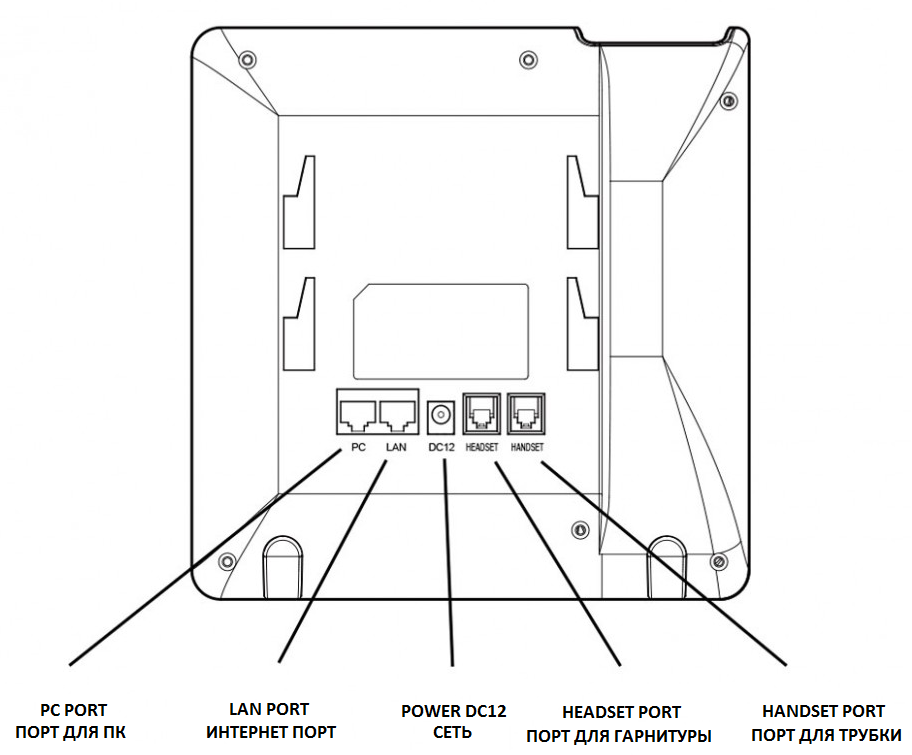Схема физического подключения IP-телефона
Настройка SIP-аккаунта
Первичная настройка SIP-аккаунта
-
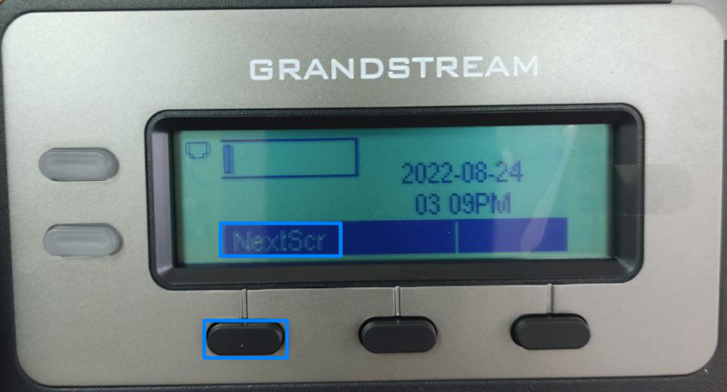
- После подключения питания, телефон начнет загружаться. Необходимо подождать пару минут пока телефон получит от роутера (маршрутизатора) ip адрес, а на экране появится дата, время и кнопка NextScr. Телефон изначально настроен на автоматическое получение IP-адреса, т.е на режим DHCP. Осталось узнать какой ip адрес выдал маршрутизатор телефону нажав на панели телефона "NextScr". 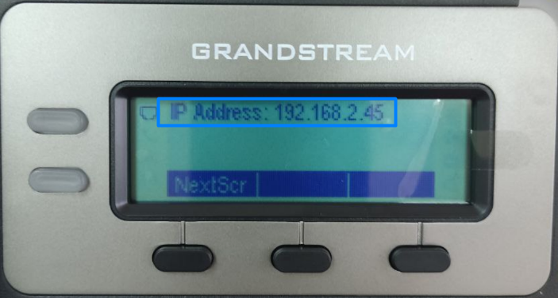
- В нашем случае ip адрес следующий: 192.168.2.45 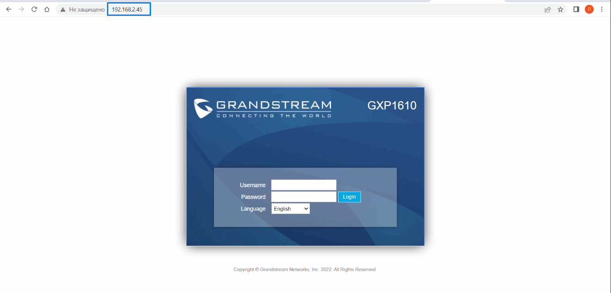
- Открываем браузер и в вводим в строке адреса 192.168.2.45 и попадаем на страницу входа настройки IP-телефона. 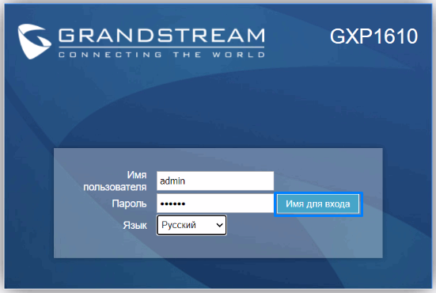
- Меняем язык интерфейса на русский. Далее вводим Имя пользователя: admin и Пароль: admin, нажимаем на кнопку "Имя для входа" и попадаем в настройки телефона на страницу состояния учетной записи. 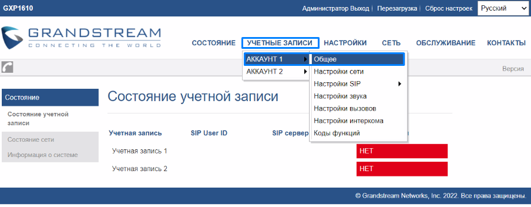
- Выбираем пункт "УЧЕТНЫЕ ЗАПИСИ", далее "АККАУНТ" 1 и выбираем "Общее". 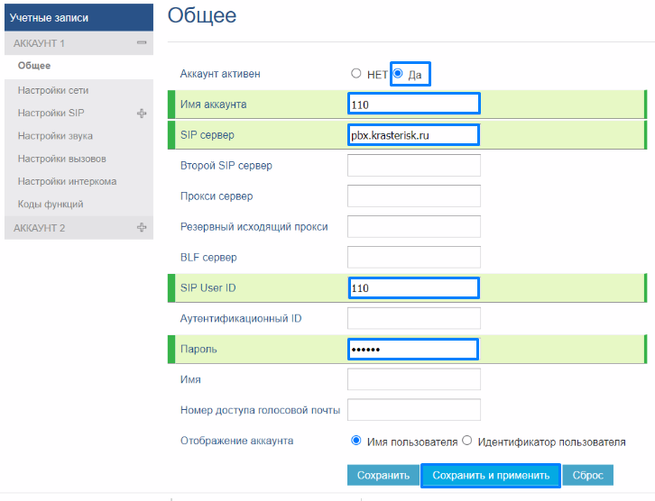
-
- Переключаем пункт "Аккаунт активен" в положение "Да"
- Имя аккаунта: можно написать любое, в нашем примере "110"
- SIP сервер: в нашем примере pbx.krasterisk.ru
- SIP User ID: 110 (указываете свой sip user id из личного кабинета
- Пароль: указываете пароль из личного кабинета
- Проверяем удалось ли телефону зарегистрироваться на сервере pbx.krasterisk.ru. Для этого выбираем "СОСТОЯНИЕ", далее нажимаем на "Состояние учетной записи". 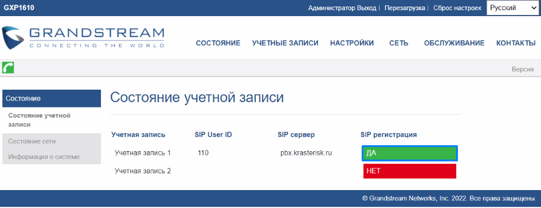
- Если в графе "Sip регистрация" высвечивается "ДА" на зеленом фоне, значит все прошло успешно
- На самом телефоне тоже отображается 110. Теперь попробуйте сделать звонок с телефона на Ваш сотовый и проверить работает ли связь в действительности.
После того как заполнили все необходимые поля нажимаем "сохранить и применить". Ждем пока применятся настройки и, если все было настроено корректно, то иконка "статус" учетной записи изменится с на 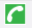
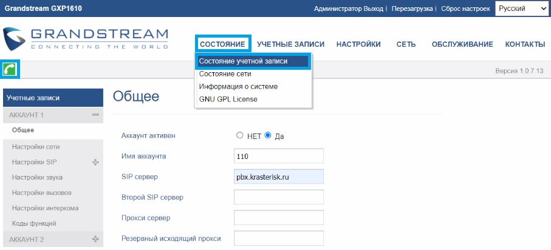
Настройка времени
Настройка языка
Для того чтобы изменить язык дисплея телефона при первичном подключении зайдите в «Меню» > «Preference» > «Display language» > из списка выберите «Русский»
Описание клавиатуры для IP-Телефона Grandstream XP1610/1615
- Для доступа к меню нажмите круглую клавишу меню.
- Для выбора пунктов меню используйте клавиши со стрелками.
- Для входа в подменю используйте клавишу меню.
- Телефон автоматически выйдет из меню если поступит входящий звонок, будет поднята трубка или проистечению 60 секунд простоя
Краткое руководство пользования для IP-Телефона Grandstream XP1610/1615/1620/1625/1628/1630
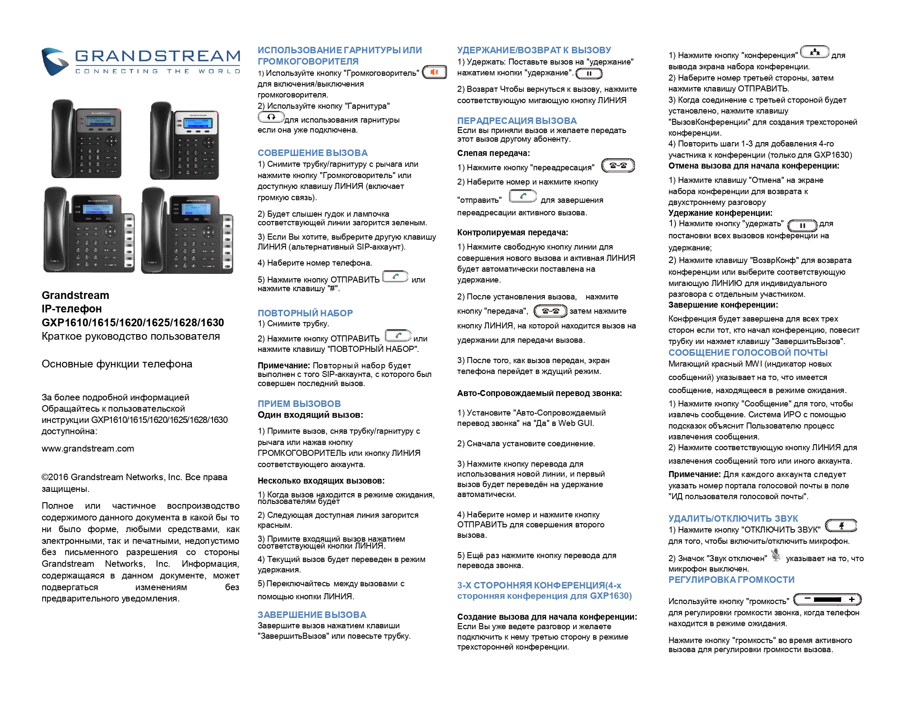Неисправность
Неисправность gxp16xx
Подключение IP-Телефонной базы Grandstream DP750
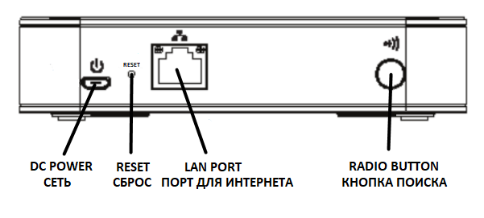Схема физического подключения IP-Телефонной базы Grandstream DP750
Настройка SIP-сервера
Первичная настройка SIP-сервера через WEB интерфейс
-
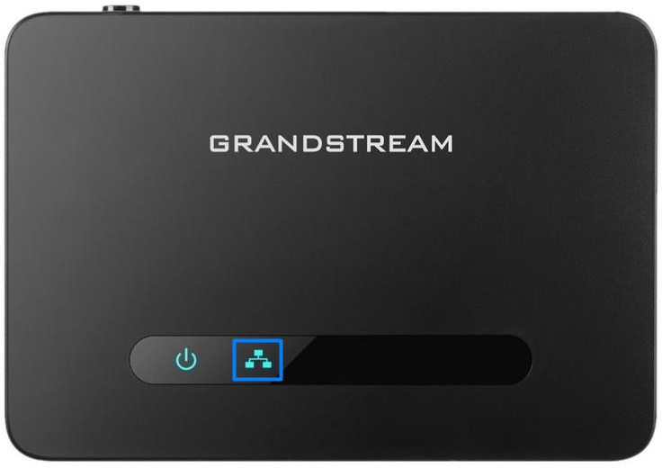
- После подключения питания, база начнет загружаться. Необходимо подождать пару минут пока база получит от роутера (маршрутизатора) ip адрес, а на экране базы иконка 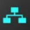 перестанет моргать и будет гореть постоянно. После загрузки базового блока необходимо определить локальный IP адрес DP750. Заводская сетевая настройка позволяет получить его автоматически от DHCP сервера Для определения локального IP адреса, потребуется одна из подключаемых трубок Grandstream DP720 или её аналоги. 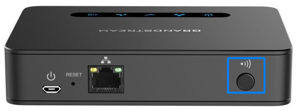
- Проведите регистрацию трубки DP720 на базовой станции, для чего переведите базу в состояние регистрации, нажав и удерживая кнопку 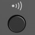 на задней стенке устройства до тех пор, пока на экране базы не начнет моргать. 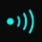. 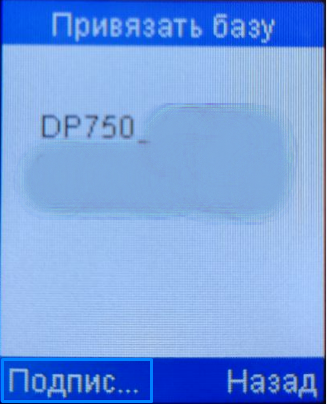
- После этого на экране трубки отоброзиться название базы и в левом нижнем углу появиться кнопка "подпис..." после ее нажатия, начнеться процесс регистрации трубки.
- Ваша трубка привязана. Теперь легко узнать IP адрес базы. В меню трубки зайдите в раздел Меню, Настройки, Статус и прочитайте адрес. Также получить информацию об IP адресе можно с помощью вашего роутера - войдите в веб интерфейс роутера на страницу с таблицей выданных IP адресов и по МАС адресу телефона определить его IP адрес. МАС адрес указан на стикере, приклеенном на корпусе.
Настройка SIP-аккаунтов
Настройка времени
Настройка языка
Для того чтобы изменить язык дисплея телефона при первичном подключении зайдите в «Меню» > «Preference» > «Display language» > из списка выберите «Русский»
Описание клавиатуры для IP-Телефона Grandstream XP1610/1615
- Для доступа к меню нажмите круглую клавишу меню.
- Для выбора пунктов меню используйте клавиши со стрелками.
- Для входа в подменю используйте клавишу меню.
- Телефон автоматически выйдет из меню если поступит входящий звонок, будет поднята трубка или проистечению 60 секунд простоя
Краткое руководство пользования для IP-Телефона Grandstream XP1610/1615/1620/1625/1628/1630
Неисправность
Неисправность gxp16xx